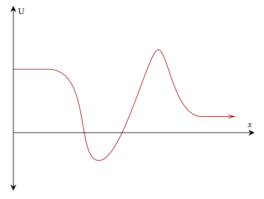
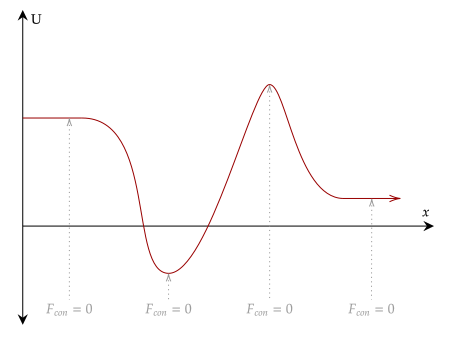
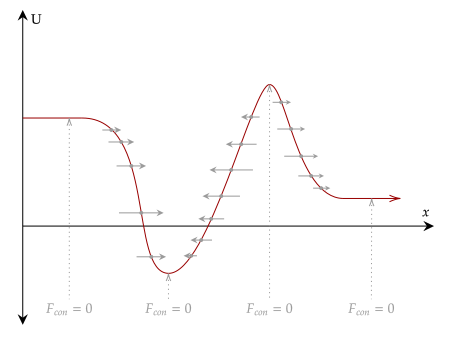
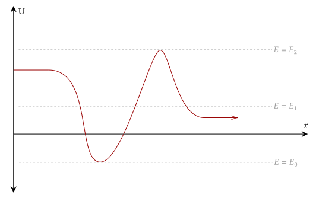
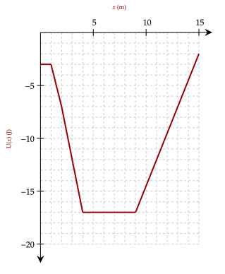
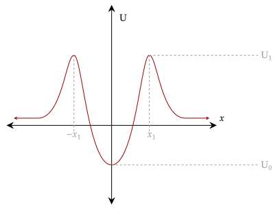

Let's analyze a more complicated potential energy function, which we show below. This one is still one-dimensional, depending on the x-component of the position. We set here that going right is positive; this is usually quite a mundane thing to notice, but here it is important.

We can see here that there are multiple portions where the function reaches a high and low point. From calculus, we know that the slope at these points, called

Further, we can see at the right that it levels off. At this portion, the slope is visually zero, meaning that the magnitude of the conservative force acting on it is also zero. If we imagine an object at these positions, they can either be at rest or moving at constant velocity via the Law of Inertia; it is in equilibrium.
Since the strength and direction of the conservative force is the negative slope of the function at any point, a negative slope means the object moves to the right, and vice versa. Thus, we can plot out the force for each position as well.
For the low point in the graph, the force acts toward it, while at the high point, the force acts away from it; meanwhile, at the two horizontal ends, no force acts on it and thus at that point the object coasts forever.

If we imagine an object at, say, a low point, if we apply a force onto it to move it out of its equilibrium position, the force pulls it back to it. Meanwhile, if we apply a force to an object in a high point, the force pushes it away from it.
This means that, despite these two having the same property that they are equilibrium positions, they differ in how the object acts after it is moved out of it; the former brings it back to equilibrium, while the other actively pushes it away from it.
Unstable equilibrium position - an equlibrium position where the object does not naturally return to the original position after being displaced
A classic example of these two is that of a marble and a bowl. The first setup involves placing the marble within the bowl such that it rolls into the middle. Applying a force onto it will cause it to roll back to the middle; that point becomes its equilibrium position.
If we place the marble on top of an upside down bowl, if we push the marble now it will roll off the bowl, getting displaced farther and farther away from it. This is unstable.

Another consequence of the above is that it shows that motion will always seek a lower possible potential energy, and once it reaches the lowest possible it will stay there unless it finds another.
Question 1
(HRK Q12.17) A marble can be balanced on the edge of a bowl so that with a small push it could either roll into the bowl and oscillate back and forth inside it or roll off the bowl, land on the floor, and break. Is this balanced position a point of stable or unstable equilibrium?
Solution
It is a point of unstable equilibrium. In the first scenario it won't return back to its original position (think like the potential energy diagram above, where if you displace the object left it will go down to the stable equilibrium point below).
The second scenario also has the same property where it will continuously get farther and farther from its initial equilibrium position.
Question 2
(HRK Q12.18) Is it possible to have an equilibrium point that is both unstable and stable?
Solution
In one dimension, no. In more dimensions however, yes. Here is one example. A marble is balanced on the middle of a saddle (think that of a horse) and is pushed. In one direction, the saddle curves like a bowl, and it goes back to its original position. In the other, it acts like an upside down bowl, and will continuously get farther and farther.
Another thing we can do with the above graph is note that we haven't actually set any kinetic energy for the object. If we add kinetic energy to the system (such as imparting a force onto the object) we overall raise the mechanical energy within the system (we expand on this later in our topics on external work).
For example, for the object in the bowl, if we impart enough kinetic energy into it is possible that we can reach higher and higher heights. Thus, for this diagram, we can arbitrarily choose the mechanical energy of the system.

Starting from bottom to top, the lowest possible mechanic energy occurs at the bottom of the graph. Here, the object remains at rest at the lowest point; think that of the marble in the bowl. We then impart a force onto it, bringing its mechanical energy up. It is able to reach a higher height, but it is not enough to clear the left or right side.
If we impart enough force, however, it is able to clear it; think the marble has escaped the bowl. It can go left, where it goes off to infinity, or it can pass the unstable equilibrium point and go right, going off to infinity as well.
Exercise 1
(HRK E12.29b) A particle of mass 2.0 kg moves along the x axis through a region in which its potential energy varies as shown below.

When the particle is at , its velocity is 2.0 m/s. What are the limits of its motion?
Solution
We compute for the kinetic energy at that position, becoming the initial kinetic energy. This will allow us to get the mechanical energy at that position as well.
This gives us that the total mechanical energy of the system is −3.0J. Given this, the object can only move from the positions 2m to 13m, or .
Exercise 2
(HRK E12.29b) An alpha particle (helium nucleus) inside a large nucleus is bound by a potential energy like that shown in the figure below. Describe the possible motions.

Solution
Let be the total mechanical energy of the system. If , the object will oscillate between the two maximum potential energies.
When it is at the level of the maximum potential energy, it is able to escape the dike, and it will continue to move away to infinity for forever in both the positive and negative directions.
Using calculus, we can tell when an equilibrium position is stable or unstable. Taking the
If , the object is in stable equilibrium
If , the object is in unstable equilibrium
Looking at the function, a local minimum means that it is a stable equilibrium position. Meanwhile, a local maximum means that it is an unstable equilibrium position.